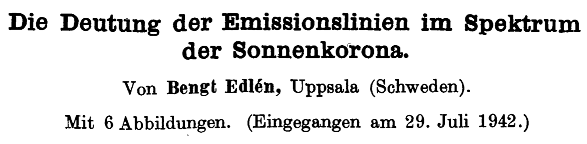
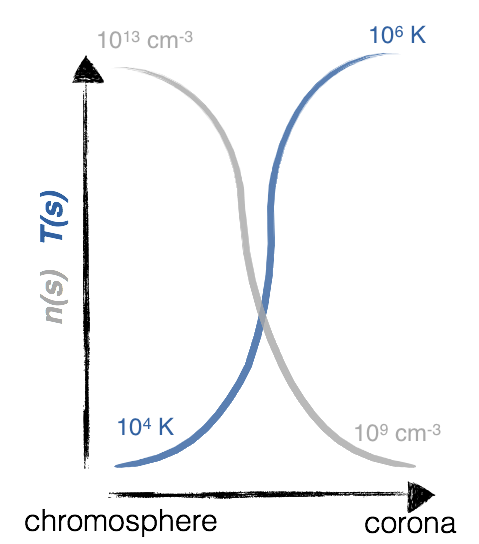
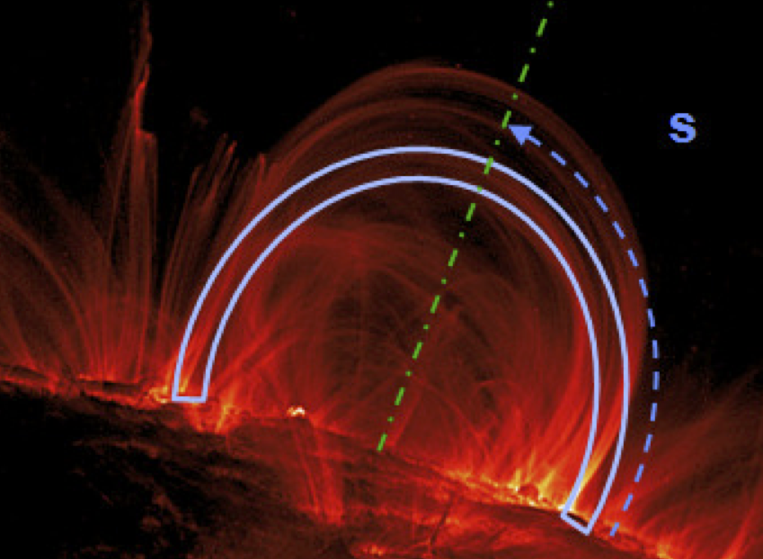
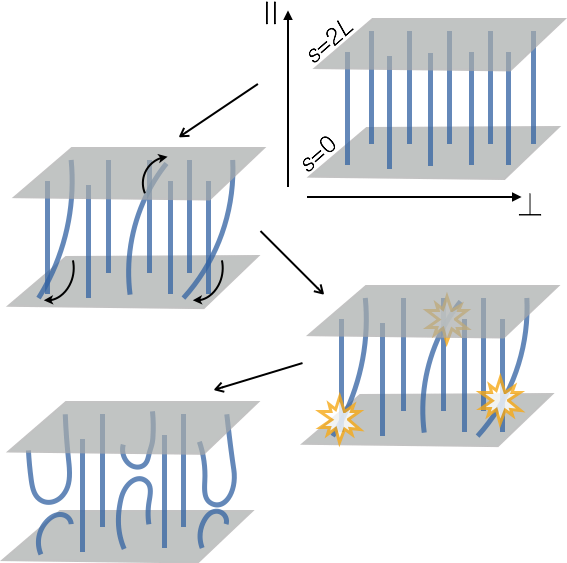
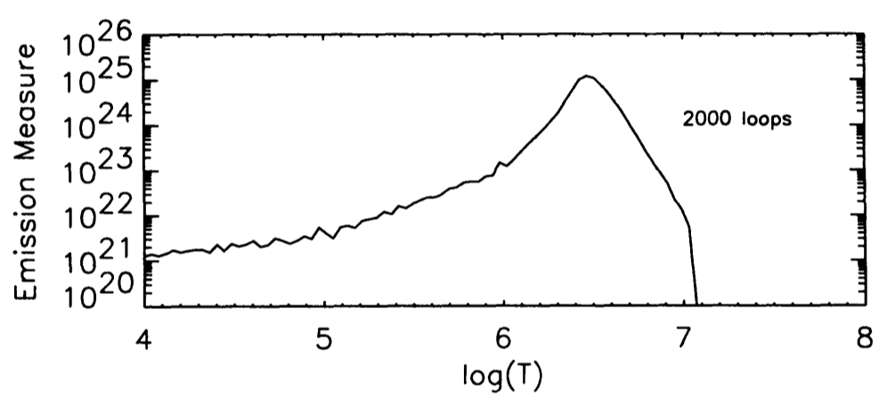
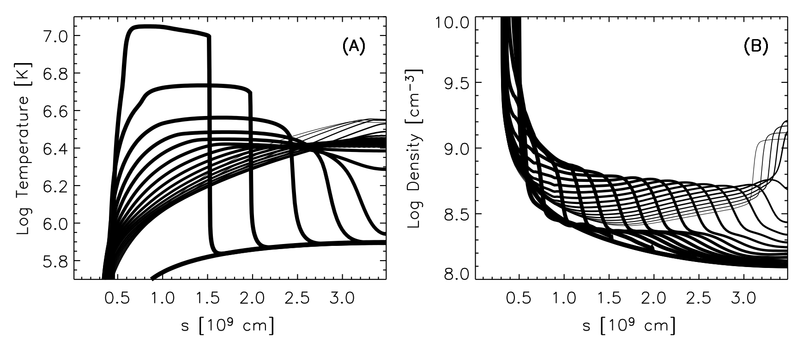
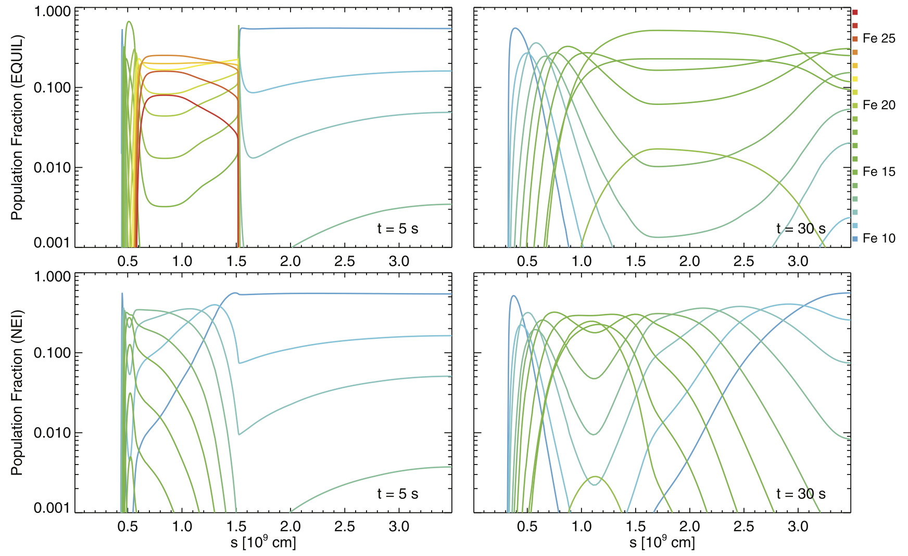
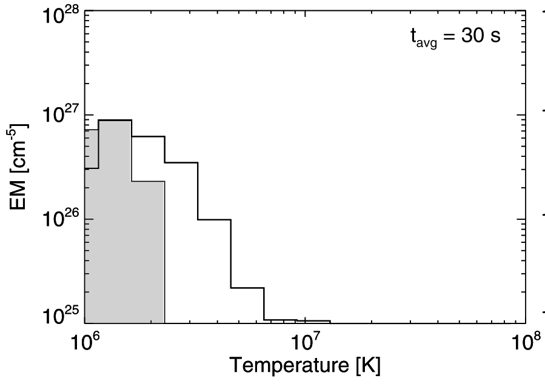
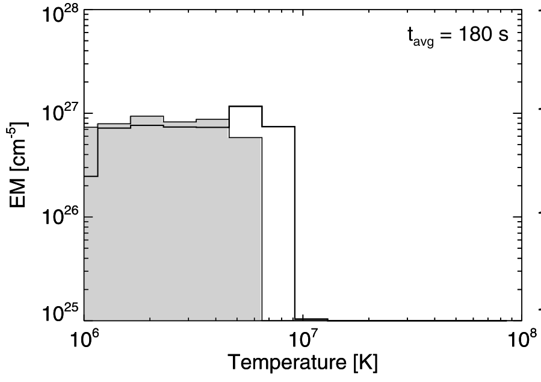
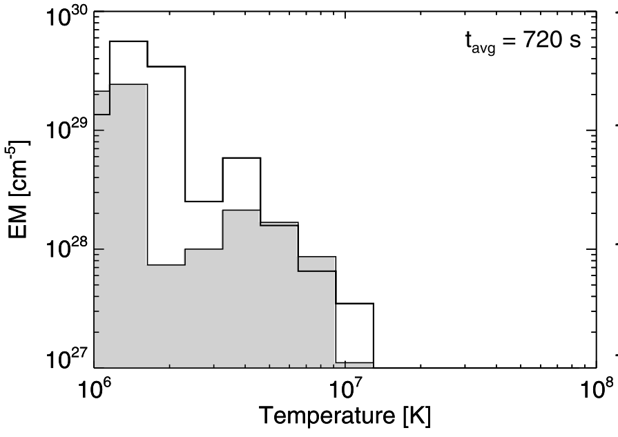

Nonequilibrium of Ionization & the Detection of Hot Plasma in Nanoflare-heated Coronal Loops
Reale, F. & Orlando, S., 2008, ApJ, 684, 715
Will Barnes / P&A Journal Club / 5 February 2016
Created with reveal.js
The Solar Corona
- Uppermost layer of the solar atmosphere
- Visible to the naked eye only during total eclipse
- Very diffuse and optically thin!

The Corona is Hot!
- The coronal heating problem (in a nutshell):
- Core of the Sun $\sim 15$ MK
- Surface of the Sun $\sim 6000$ K
- Corona $>1$ MK ???
- Edlén (1943) was the first to identify highly ionized $\mathrm{Fe}$ and $\mathrm{Ca}$ in solar spectra, implying $T>1$ MK
- Outstanding problem for the last 70 years
The Corona is Hot!
Coronal Loops
Coronal Heating
- Many proposed mechanisms for heating
- Heating properties unknown: frequency? magnitude? duration?
- Broadly divided into two classes: AC & DC
- Strong theoretical and observational support for both
Nanoflares (Parker, 1988)
- Loops rooted in the surface dragged around by convective motions.
- Mechanical energy stored in the magnetic field as the field braids and twists.
- Field reconnects and relaxes, releasing energy and heating the plasma.
- Short, impulsive bursts of energy, each having about one billionth the energy of a flare.
Nanoflares (Parker, 1988)
Theory versus Observation
Predicted hot, weak emission not yet observed.
Two possibilities:
- Model is wrong or incomplete
- Our thermometer is inadequate
Nonequilibrium Ionization (NEI)
- Observationally, everything we know about the Sun comes from spectroscopy.
- We know the temperatures at which certain ions are formed (i.e. $\mathrm{Fe}$ $\mathrm{XVIII}$ at 7 MK )
- Ions formed through collisional ionization $$X_i^{+m}+e^{-}\to X_{i^{'}}^{+m+1}+2e^{-}$$
- This process is not instantaneous, but rather occurs on some timescale,$$\tau_{X^{+m}}=\frac{1}{n_e(\alpha_{X^{+m}} + S_{X^{+m}})}$$
Line Intensity
- Line intensity for a given transition integrated along the line of sight from the plasma to the observer
- Intensity depends on both the density and the contribution function, $G$, which is peaked strongly in $T$.
- The fractional ionization $N(X^{+m})/N(X)$ is the key parameter here.
Ion Population Fractions
- Model evolution of ion populations with,
- If we assume ionization equilibrium,$$Y_{i+1}\alpha_{X_{i+1}} + Y_{i-1}S_{X_{i-1}} = Y_i(\alpha_{X_i} + S_{X_i})$$
Hydrodynamics
$\mathrm{Fe}$ Population Fractions
Emission Measure Distributions
  Conclusions
- Coronal heating remains an open problem
- Nanoflares are a viable solution despite lack of observational evidence
- NEI may help to explain lack of hot emission
- Forward-modeling & better instrument sensitivity important to pinning down heating properties